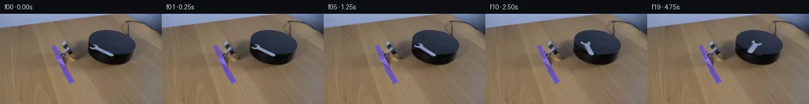

![首帧]()

Round 00
2026-11-05T10:43:41.666110+00:00像素候选变化代码 +213/−0inspection 更新
pixels 5ebb0debc0edd472 · code 18aa1b895dc69af2
查看本轮 generate.py 真实 diff
--- previous/generate.py +++ current/generate.py @@ -0,0 +1,213 @@ +"""Pixel-only clockwise wrench animation, derived solely from first_frame.png. + +No renderer, external assets, trained model, or generated-image inspection. +Run: python generate.py +""" +from pathlib import Path +import json +import re +import base64 +import cv2 +import numpy as np +from PIL import Image, ImageDraw +from scipy.ndimage import distance_transform_edt +from artifact_io import save + +ROOT = Path(__file__).resolve().parent +TMP = ROOT / '.tmp' +TMP.mkdir(exist_ok=True) +W, H = 256, 144 +SCALE = 4 +ANGLES = np.array([0,.8,2.5,5,8.3,12.5,17.5,23.5,30,37,44,51,57.5,63.3,68.2,72.2,75.3,77.6,79.2,80], np.float64) +# A circle in the tabletop plane projects onto the observed inclined ellipse. +PROJECTION = np.array([[1.,0.],[.17,.53]],np.float64) +PROJECTION_INV = np.linalg.inv(PROJECTION) +PIVOT = np.array([172.,59.]) +TOP_CENTER = np.array([177.,46.]) + + +def rotation(degrees): + a = np.deg2rad(degrees) + c,s = np.cos(a),np.sin(a) + return PROJECTION @ np.array([[c,-s],[s,c]]) @ PROJECTION_INV + + +def build_layers(source): + # Restrict segmentation to the only moving object's measured source box. + roi = source[47:69,141:181].astype(np.int16) + seeds = np.zeros((H,W), np.uint8) + seeds[47:69,141:181] = ((roi.min(2)>62)&((roi.max(2)-roi.min(2))<70)) + count, labels, stats, _ = cv2.connectedComponentsWithStats(seeds) + component = 1 + np.argmax(stats[1:,cv2.CC_STAT_AREA]) + solid = (labels==component).astype(np.uint8) + repair = cv2.dilate(solid, cv2.getStructuringElement(cv2.MORPH_ELLIPSE,(5,5))) + # Narrow local fill retains the existing platform rim and the tabletop. + clean = cv2.inpaint(source, repair*255,3,cv2.INPAINT_TELEA).astype(np.float32) + original = source.astype(np.float32) + diff = original-clean + interior = cv2.erode(solid,np.ones((3,3),np.uint8)).astype(bool) + _,near = distance_transform_edt(~interior,return_indices=True) + nearest = original[near[0],near[1]] + contrast = nearest-clean + # Color-based subpixel matting, retaining both open jaw apertures. + opacity = np.sum(diff*contrast,axis=2)/np.maximum(np.sum(contrast*contrast,axis=2),1.) + extent = cv2.dilate(solid,np.ones((3,3),np.uint8)).astype(bool) + valid = extent & (diff[:,:,0]>5) & (diff[:,:,1]>5) + opacity = np.where(valid,np.clip(opacity,0,1),0).astype(np.float32) + opacity[interior] = 1. + opacity[opacity>.94] = 1. + opacity[opacity<.025] = 0. + # Unmix the original antialiased pixels instead of transporting black fringes. + foreground = np.zeros_like(original) + nz = opacity>0 + foreground[nz] = (original[nz]-clean[nz]*(1-opacity[nz,None]))/opacity[nz,None] + foreground = np.clip(foreground,0,235) + premul = foreground*opacity[:,:,None] + # Retain the source contact-shadow shape as a separate, subtle dark layer. + # The shift is held fixed in screen coordinates to keep illumination fixed. + contact = np.clip((clean.mean(2)-original.mean(2))/np.maximum(clean.mean(2),10),0,.65) + contact *= repair + contact *= (1-opacity) + contact = cv2.GaussianBlur(contact.astype(np.float32),(0,0),.38) + return clean,opacity,premul,contact,repair + + +# Pixel centers of the supersampled destination, in original-frame coordinates. +yh,xh = np.indices((H*SCALE,W*SCALE),dtype=np.float32) +DEST = np.stack([(xh+.5)/SCALE-.5,(yh+.5)/SCALE-.5],axis=-1) + + +def warp_layer(layer, degrees): + inverse = np.linalg.inv(rotation(degrees)) + coords = (DEST-PIVOT) @ inverse.T + PIVOT + result = cv2.remap(layer,coords[:,:,0].astype(np.float32),coords[:,:,1].astype(np.float32), + cv2.INTER_CUBIC,borderMode=cv2.BORDER_CONSTANT,borderValue=0) + return cv2.resize(result,(W,H),interpolation=cv2.INTER_AREA) + + … diff truncated; 126 more lines …